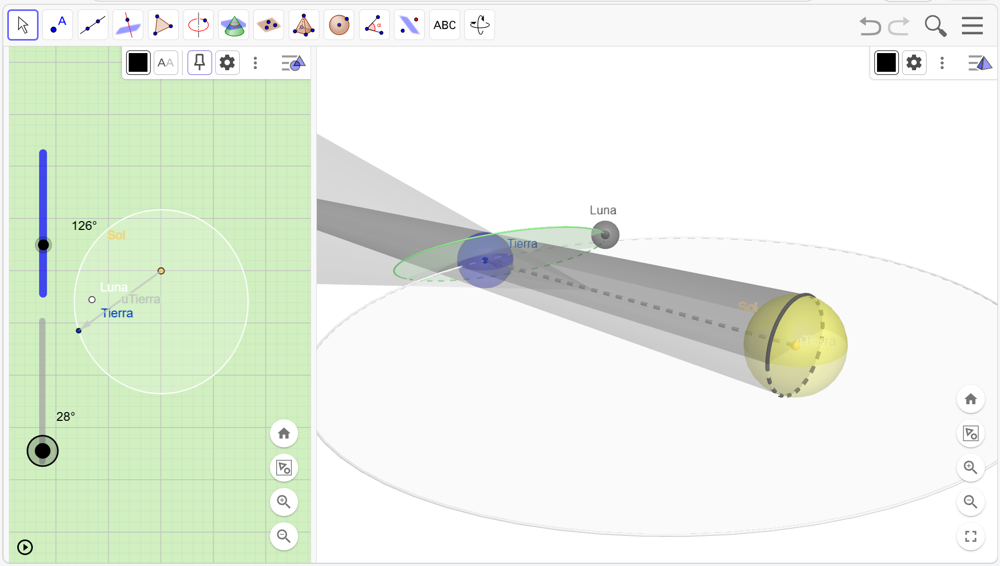
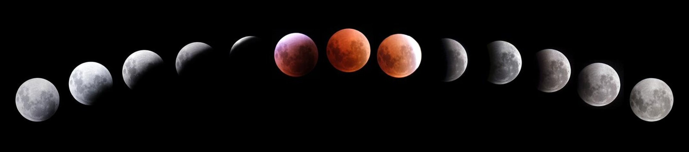

EXPLORACIÓN DE LA CAPA 4 DEL MODELO:
Desactiva todos los elementos de la Capa 3 y activa en la Capa 4 los nuevos conos ConoUmbraTierra y ConoPenumbraTierra.

Ahora vamos a entender qué es un Eclipse Lunar, que ocurre cuando la Tierra se interpone directamente entre el Sol y la Luna, proyectando su propia sombra sobre la superficie lunar.
• Umbra de la Tierra: Es la zona de sombra total y oscura. Si la Luna entra por completo en ella, experimentamos un Eclipse Lunar Total (donde la Luna se tiñe de un tono rojizo).
• Penumbra de la Tierra: Es la zona de sombra parcial y más clara que rodea a la umbra. Cuando la Luna pasa por aquí, su brillo disminuye de forma casi imperceptible.
Teniendo esto en cuenta intenta realizar o responder las siguientes cuestiones:
1. Mueve la Luna a lo largo de su órbita y haz que cruce el ConoPenumbraTierra sin llegar a tocar el cono central oscuro. Observa cómo cambia la iluminación.
Si miraras la Luna en ese momento desde la Tierra, estarías presenciando un Eclipse Lunar Penumbral.
2. Sigue moviendo la Luna hasta que una parte de ella entre en el ConoUmbraTierra pero otra parte quede fuera. ¿Cómo crees que se vería la Luna desde la Tierra en esta fase?
Estás recreando un Eclipse Lunar Parcial.
3. Consigue alinear perfectamente los astros de forma que la Luna quede completamente oculta dentro del ConoUmbraTierra.
En este momento ocurre un Eclipse Lunar Total, conocido popularmente como "Luna de Sangre".
Si la Tierra está tapando por completo la luz del Sol, ¿por qué la Luna no se vuelve totalmente invisible y en su lugar se ve de un color rojo oscuro? La respuesta está en la atmósfera de la Tierra. Esta actúa como un lente que desvía la luz del Sol (filtrando los tonos azules y dejando pasar solo los rojos) y la proyecta hacia el interior del cono de sombra, iluminando la Luna de forma indirecta. ¡Es como si la Luna reflejara todos los amaneceres y atardeceres de la Tierra a la vez!
Nota: En esta simulación puedes ver claramente cómo, gracias a esa inclinación, la mayoría de los meses la Luna pasa 'por encima' o 'por debajo' de la sombra de la Tierra, evitando el eclipse.
Esta composición fotográfica muestra la secuencia real del eclipse lunar total capturada desde la Estación Concordia en la Antártida. En ella se puede apreciar el viaje completo de la Luna a través de la sombra de la Tierra, pasando de un color plateado brillante a un rojo profundo y viceversa.
